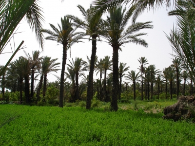
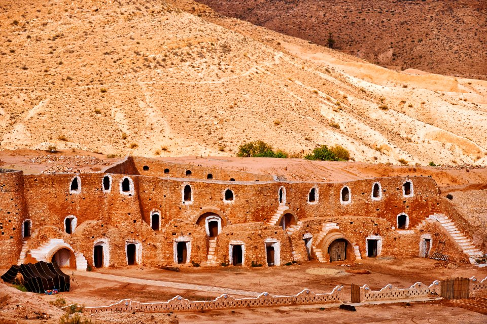
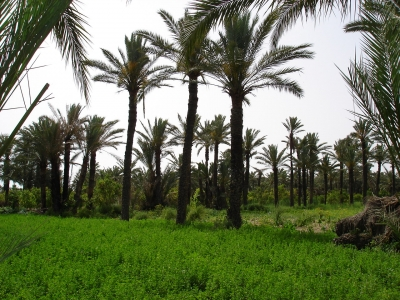
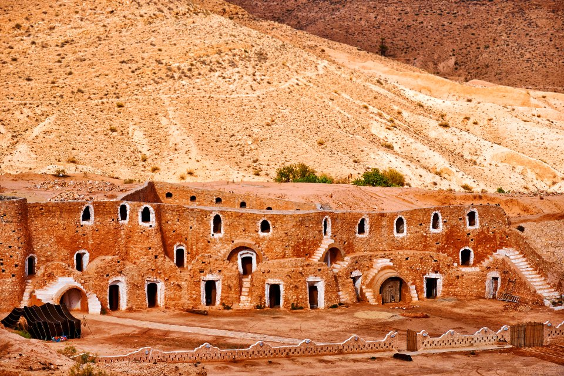

Gabès est une ville du sud-est de la Tunisie. Plus grande ville du Sud tunisien après Sfax, Gabès possède la particularité d'être à la fois une oasis et un port maritime. Cette fonction portuaire date du développement industriel des années 1970. Auparavant, Gabès était un mouillage réputé difficile et dangereux

L'origine du nom de Gabès nous fait conclure que la cité a été fondée par les Berbères bien avant l'arrivée des Phéniciens qui regroupent l'une de ses agglomérations en comptoir commercial. La ville reste carthaginoise jusqu'au iie siècle av. J.-C. et la Deuxième guerre punique puis devient une colonie romaine. L'oasis devient alors un centre commercial florissant rattaché à la Tripolitaine dont Pline célèbre avec emphase la fécondité du sol. La ville est encore très prospère sous la domination byzantine.

Port de pêche jadis spécialisée dans la pêche au thon, Gabès abrite également sa propre conserverie. Par ailleurs, sa palmeraie de 300 000 palmiers-dattiers s'étend dans un ensemble d'une dizaine d'oasis (Oudhref, Métouia, Ghannouch, Chatt Essalem, Bou Chemma, Chenini Nahal, Teboulbou et Kettana, etc.) orienté sur un axe nord-sud le long du littoral compris entre l'oued Akarit (au nord) et l'oued El Ferd (au sud). L'importante récolte des grenades dans ces oasis a souvent fait le lien entre Gabès et les grenades (grenades de Gabès).

 


